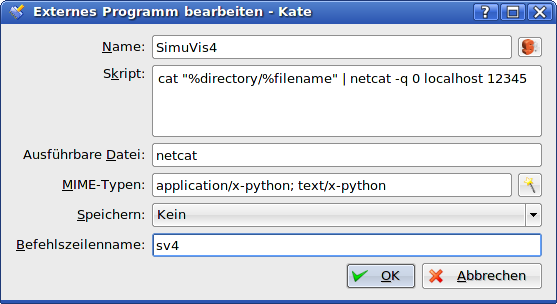
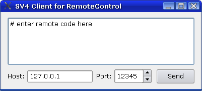

The RemoteControl listens on a tcp port for connections. When receiving code, it tries to execute it inside SimuVis as a script.
This is a security risk! Be careful when using this PlugIn! The only security mechanism is a check if the start of the source IP of the connection matches a specified filter. Code is not checked at all before execution, it may erase your harddisk! The main motivation of this plugin is the ability to develop scripts in an external text editor and execute it in SimuVis with a simple keystroke.
In a configfile you may use the following items:
[remotecontrol] # int: port to listen tcp_port = 12345 # int: size of sommand queue, if unsure, use 1 cmd_queue_size = 1 # bool: start with remote command execution enabled start_enabled = yes # string: allow local connections only, can be shorter like 192.168. ip_filter = 127.0.0.1 # bool: raise mainwindow when executing code raise_mainwindow = yes # bool: use hide/show hack when raising doesn't work properly raise_use_hack = yes
A sample configuration for the KDE editor kate could look like this:
This configuration uses netcat for transmission, but you may use SV4ClientRC.pyw instead.
A simple client called SV4ClientRC.pyw is provided for convenience and as an example (in the bin-folder). It operates in GUI mode or without any visual feedback. The GUI looks like this:
Try this: # start SimuVis4, make sure RemoteControl is running # start SV4ClientRC.pyw # check host and port settings, enter "print 1/0" and execute it by pressing Send # SimuVis4 should show the exception dialog with a ZeroDivisionError # ignore the exception and try something more complex
SV4ClientRC.pyw [options] [scriptfiles]
Options include:
scriptfiles means one or more python files, multiple files are concatenated.